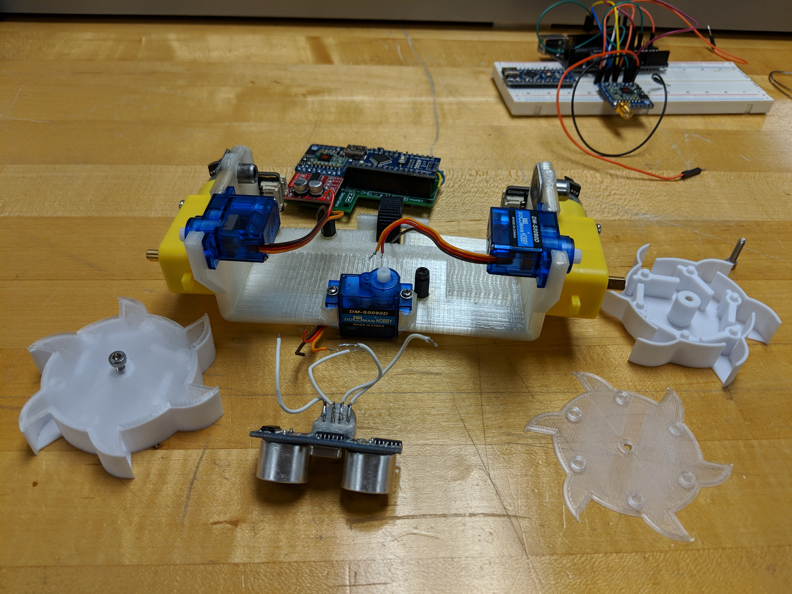
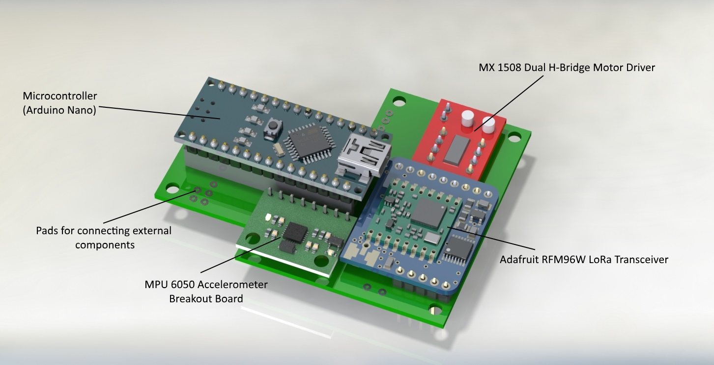
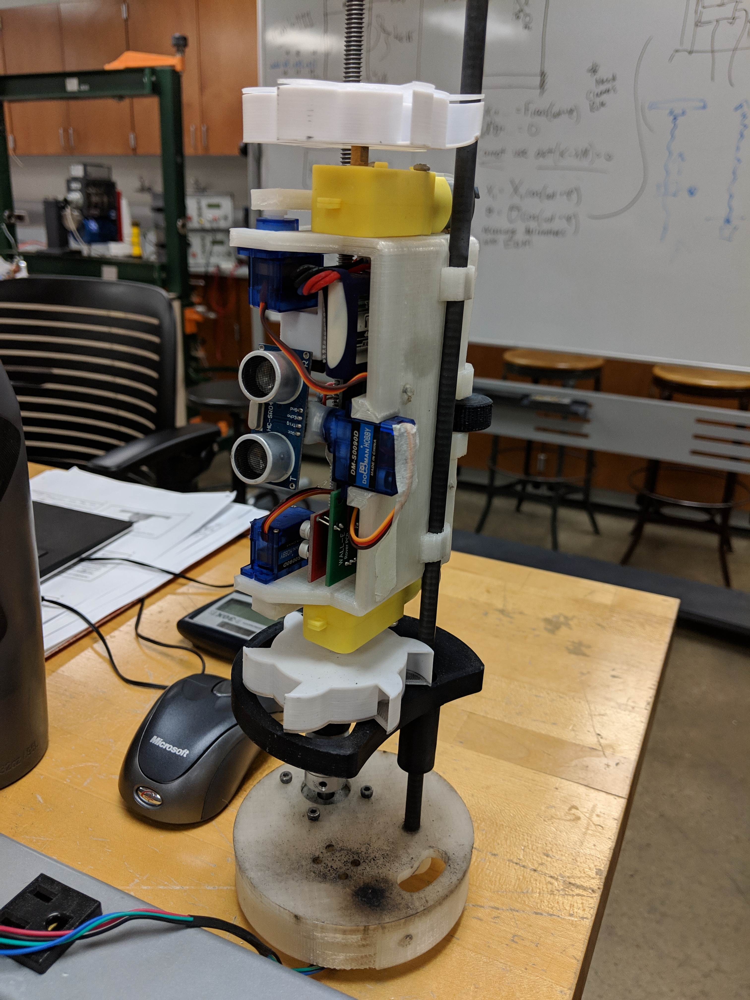

WALL-E
An autonomous rover deployed from a rocket that can drive around avoiding obstacles, flip itself over if turned upside down, and collect soil samples in its wheels.
Wall-E was developed as part of the NASA Student Launch competition for the 2018-19 season. Being the lead payload engineer, I led the development, testing and integration of the hardware and software for the rover and the deployment system. The image above shows the rover and its deployment system ready to be installed into the rocket before launch.
The NASA challenge called for a rover that can drive autonomously, and pick up 10 ml of soil sample near the landing site of the rocket. It would also need to move at least 10 ft away from the sample collection site on its own. For the soil collection mechanism, I decided on a pair of excavator wheels with internal flaps so that the rover could collect soil by simply driving backwards
An open-frame design was chosen due to its relative simplicity ease of assembly. A single-piece chassis design allowed the bulk of the frame to be 3D printed out of nylon in one piece. Two geared DC motors provided power, and turning was achieved through differential motor speed. For obstacle avoidance, an ultrasonic sensor mounted on a servo motor scanned the area in fornt of the rover while driving.

The deployable arm served two purposes; one was to flip the rover if deployed upside down - using readings from an accelerometer to determine orientation, and the other purpose was to dig into the ground in front while collecting soil by turning the wheels in reverse.
A custom PCB was designed to house all the electronics. This includes an Arduino Nano, a motor driver, an accelerometer breakout board, and a LoRa transceiver to communicate with the ground station.

Wall-E was retained in the rocket during launch and landing using a custom-designed bulkhead that housed a stepper motor connected to a lead screw, and a nylon guide rod. The lead screw was used to deploy the rover after landing, and the guide rod ensured that the deployment happened smoothly.

The image below shows the assembly after a ground test of the black powder-based separation system used to deploy the parachutes. The rover and the deployment mechanism are a little toasty, but both survived the test just fine!
